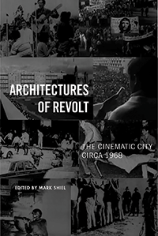

<body bgcolor="#FFFFFF" text="#000000" link="#0000FF" vlink="#CC0000" alink="#CC0000"><center><hr width="350" size="1" align="center" noshade>A groundbreaking exploration of how filmmaking, architecture, and urban planning shaped and were shaped by mass protest movements in and around 1968<hr width="350" size="1" align="center" noshade><p><a href="https://cdcshoppingcart.uchicago.edu/Cart/ChicagoBook.aspx?ISBN=&&PRESS=temple" target="_top">Buy this book!</a> | <a href="https://cdcshoppingcart.uchicago.edu/Cart/Cart.aspx?PRESS=temple" target="_top">View Cart</a> | <a href="https://cdcshoppingcart.uchicago.edu/Cart/Cart.aspx?PRESS=temple" target="_top">Check Out</a></p><p></p></center><!--none//--><h1 class = "booktitle">Architectures of Revolt</h1> <h1 class = "subtitle">The Cinematic City circa 1968</h1>
<h3>Edited by Mark Shiel </h3>
paper: $36.95, Jul 18<BR>EAN:&nbsp;978-1-4399-1004-7<BR><font color=#990033>Not Yet Published Preorder</FONT><font size=-7><br>&nbsp;</font></p><p class="info">cloth: $99.50, Jul 18<BR>EAN:&nbsp;978-1-4399-1003-0<BR><font color=#990033>Not Yet Published Preorder</FONT><font size=-7><br>&nbsp;</font></p><p class="info">e-book: $36.95, Jul 18<BR>EAN:&nbsp;978-1-4399-1005-4<BR><font color=#990033>Not Yet Published Preorder</FONT><font size=-7><br>&nbsp;</font></p></p></td></tr></table>
<BR> <p class="info">254 pp<BR> 6 x 9<BR> 34 halftones <p class="info"><font size=-7>&nbsp;</font></p><p class="info">
</P><BLOCKQUOTE></BLOCKQUOTE>
<p>Coinciding with the fiftieth anniversary of the worldwide mass protest movements of 1968-against war, imperialism, racism, poverty, misogyny, and homophobia-the exciting anthology <i>Architectures of Revolt</i> explores the degree to which the real events of political revolt in the urban landscape in 1968 drove change in the attitudes and practices of filmmakers and architects alike.In and around 1968, as activists and filmmakers took to the streets, commandeering public space, buildings, and media attention, they sought to re-make the urban landscape as an expression of utopian longing or as a dystopian critique of the established order. In <i>Architectures of Revolt</i>, the editor and contributors chronicle city-specific case studies from Paris, Berlin, Milan, and Chicago to New York, Los Angeles, Mexico City, and Tokyo. The films discussed range from avant-garde and agitprop shorts to mainstream narrative feature films. All of them share a focus on the city and, often, particular streets and buildings as places of political contestation and sometimes violence, which the medium of cinema was uniquely equipped to capture. <i>Contributors include: </i><i>Stephen Barber</i><i>, </i><i>Stanley Corkin</i><b><i>, </i></b><i>Jesse Lerner, Jon Lewis</i><b><i>, </i></b><i>Gaetana Marrone, Jennifer Stob, Andrew Webber and the editor.</i><br>
<P CLASS="top"><A HREF="#top">BACK TO TOP</A></P>&nbsp;
<BR>&nbsp;
&nbsp;<P>
</P><BR>&nbsp;
<H2 class="inpageheading"><A NAME="author bio"></a>About the Author(s)</H2><p><b>Mark Shiel</b> is Reader in Film Studies and Urbanism in the Department of Film Studies at King's College London. He is the author of <i>Hollywood Cinema and the Real Los Angeles</i> and <i>Italian Neorealism: Rebuilding the Cinematic City,</i> and the co-editor of <i>Screening the City</i> and <i>Cinema and the City: Film and Urban Societies in a Global Context</i>.<br>
<P CLASS="top"><A HREF="#top">BACK TO TOP</A></P>
<p><h2 class="inpageheading"><a name="subjects"></a>Subject Categories</h2> <p><a href="http://www.temple.edu/tempress/urban.html" target="_top">Urban Studies</a> <br><a href="http://www.temple.edu/tempress/cinema.html" target="_top">Cinema Studies</a> <br><a href="http://www.temple.edu/tempress/social.html" target="_top">Community Organizing and Social Movements</a> <br><a href="" target="_top"></a> <br><a href="" target="_top"></a> </p>
</p>
<P>
<h2 class="inpageheading">In the Series</h2>�
<p>�<a target="_top" href="http://www.temple.edu/tempress/urban_life.html" OnMouseOver="window.status='Click for other books in this series!';return true;"OnMouseOut="window.status=" ><i>Urban Life, Landscape, and Policy</i></a></P>
<p><p>
The <em>Urban Life, Landscape, and Policy</em> Series, edited by David Stradling, Larry Bennett, and Davarian Baldwin, was founded by the late Zane L. Miller to publish books that examine past and contemporary cities, focusing on cultural and social issues. The editors seek proposals that analyze processes of urban change relevant to the future of cities and their metropolitan regions, and that examine urban and regional planning, environmental issues, and urban policy studies, thus contributing to ongoing debates.
</p></P>
�</P>��
</P>
<p align="center"><a href="https://cdcshoppingcart.uchicago.edu/Cart/ChicagoBook.aspx?ISBN=&&PRESS=temple" target="_top">Buy this book!</a> | <a href="https://cdcshoppingcart.uchicago.edu/Cart/Cart.aspx?PRESS=temple" target="_top">View Cart</a> | <a href="https://cdcshoppingcart.uchicago.edu/Cart/Cart.aspx?PRESS=temple" target="_top">Check Out</a></p><p><font face="Arial" size="1"><a href="copyright.html" onMouseOver="window.status='Web Copyright Policy';return true;" onMouseOut="window.status=''" title="Web Copyright Policy">&copy;</a> 2018 <a href="http://www.temple.edu" target="new" onMouseOver="window.status='Link to Temple University home page';return true;" onMouseOut="window.status=''" title="Link to Temple University home page">Temple University</a>. All Rights Reserved. http://www.temple.edu/tempress/titles/2264_reg.html</font></p>